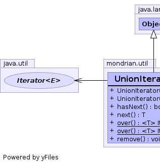
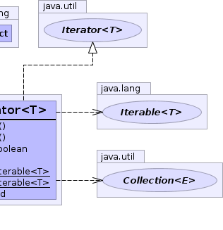

public class UnionIterator<T> extends Object implements Iterator<T>
Iterable collections.
Try, for instance, using the over(java.lang.Iterable<? extends T>...) helper method:
List<String> names;
List<String> addresses;
for (Sstring s : UnionIterator.over(names, addresses)) {
print(s);
}
|  |  |
| Constructor and Description |
|---|
UnionIterator(Collection<? extends T>... iterables)
Creates a UnionIterator over a list of collections.
|
UnionIterator(Iterable<? extends T>... iterables)
Creates a UnionIterator.
|
| Modifier and Type | Method and Description |
|---|---|
boolean |
hasNext() |
T |
next() |
static <T> Iterable<T> |
over(Collection<? extends T>... collections)
Returns the union of a list of collections.
|
static <T> Iterable<T> |
over(Iterable<? extends T>... iterables)
Returns the union of a list of iterables.
|
void |
remove() |
public UnionIterator(Iterable<? extends T>... iterables)
iterables - Array of iterablespublic UnionIterator(Collection<? extends T>... iterables)
iterables - Array of collectionspublic static <T> Iterable<T> over(Iterable<? extends T>... iterables)
You can use it like this:
Iterable<String> iter1;
Iterable<String> iter2;
for (String s : union(iter1, iter2)) {
print(s);
}iterables - Array of one or more iterablespublic static <T> Iterable<T> over(Collection<? extends T>... collections)
This method exists for code that will be retrowoven to run on JDK 1.4.
Retroweaver has its own version of the Iterable interface, which
is problematic since the Collection classes don't
implement it. This method solves some of these problems by working in
terms of collections; retroweaver deals with these correctly.
collections - Array of one or more collectionsover(Iterable[])